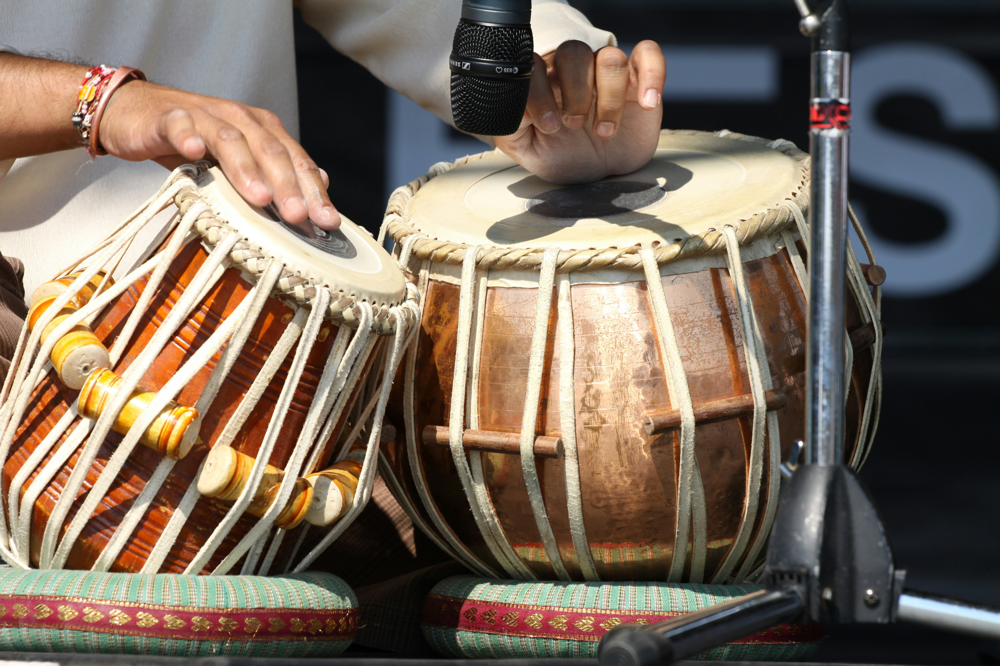

Discover the roots and evolution of this influential genre.
Afro-House emerged as a distinctive musical genre in the early 1990s, primarily in South Africa, as a fusion of traditional African rhythms with conventional house music elements. The journey of Afro-House music reveals a rich tapestry of cultural exchange and musical innovation.
The foundations of Afro-House can be traced back to the vibrant club scenes of Johannesburg and Cape Town in the late 1980s. During this period, local DJs began experimenting with imported house records from Chicago and New York, infusing them with indigenous South African rhythms and vocals. This experimentation was happening alongside the final years of apartheid, making these musical developments part of a larger social and political transformation.
The early pioneers of the genre were often operating in underground venues, where they could freely express their artistic vision without commercial constraints. These DJs would incorporate traditional African percussion instruments like djembes and talking drums into their sets, creating a unique sound that resonated with local audiences while maitaining the dance-floor energy of house music.
By the early 2000s, Afro-House had begun to establish itself as a distinct genre with its own sonic identity. This period saw the rise producers and DJs who were dedicated to developing and refining the Afro-House sound. One of the most significant figures during this era was Nkosinathi Maphumulo, better known as Black Coffee, who emerged from Durban with a style that combined soulful house with African elements.
The technological advancements of this period also played a crucial role in the development of Afro-House. More affordable production equipment and software allowed a new generation of producers to create music from home studios, democratizing the production process and leading to a diverse range of styles within the genre.
The 2010s marked a turning point for Afro-House as it gained international recognition and began to influence electronic music scenes around the world. Black Coffee's breakthrough performances at venues like Boiler Room and festivals such as Coachella helped introduce the genre to global audiences. His collaborations with international artists further cemented Afro-House's place on the world stage.
Other artists like Culoe De Song, and Djuma Soundsystem also played pivotal roles in expanding the genre's reach. Record labels dedicated to Afro-House and its various sub-genres began to emerge, providing platforms for new talent and helping to establish a global network of Afro-House artists and fans.
In recent years, Afro-House has continued to evolve, with producers incorporating elements from other genres such as amapiano, tech house, and deep house. The genre has also influenced mainstream music, with elements of Afro-House appearing in tracks by artists like Drake, Beyoncé, and Major Lazer.
Beyond its musical significance, Afro-House has played an important role in cultural exchange and identity formation. The genre has helped showcase African musical traditions to international audiences, challenging stereotypes and highlighting the continent's rich cultural heritage. At the same time, it has provided a means for Africans in the diaspora to connect with their roots and celebrate their cultural identity.
Afro-House has also been a platform for social commentary, with many tracks addressing issues like inequality, identity, and post-colonial experiences. The genre's ability to communicate these themes while maintaining it's dance-floor appeal demonstrates its versatility and depth.
The end of apartheid in South Africa created new opportunities for cultural expression and exchange, providing fertile ground for the development of Afro-House. The lifting of international sanctions also allowed for increased musical collaboration and exposure to global sounds.
The release of Black Coffee's self-titled debut EP marked a significant moment in Afro-House history. Tracks like "Happiness" showcased his distinctive style and hinted at international success that would follow.
Black Coffee founded Soulistic Music, a record label dedicated to promoting South African electronic music, providing a platform for emerging Afro-House artists and helping to define the genre's sound.
Performances by key Afro-House DJs on Boiler Room, a popular online music broadcasting platform, introduced the genre to millions of viewers worldwide, significantly expanding its global audience.
Black Coffee's residency at Hi Ibiza (formerly Space) marked the genre's arrival on the global EDM scene, bringing Afro-House to one of the world's premier electronic music destinations.
The emerging South African genre of Amapiano began to cross-pollinate with Afro-House, creating new hybrid sounds and expanding the sonic palette of both genres.
Black Coffee's Grammy win for Best Dance/Electronic Album with "Subconciously" represented a major milestone for Afro-House, bringing unprecedented recognition to the genre and solidifying its place in global music.
Throughout its history, Afro-House has been shaped by visionary artists who have pushed the boundaries of the genre and helped establish its global presence. These influential figires have not only created innovative music but have also served as cultural ambassadors, introducing African electronic music to international audiences.
Widely regareded as the foremost ambassador of Afro-House, Black Coffee's journey from Durban to international stardom has been instrumental in bringing the genre to global attention. His minimalist approach, which emphasizes subtle percussion and emotive melodies, has become a defining characteristic of modern Afro-House.
Mentored by Black Coffee, Culoe De Song has developed his own distinctive style that incorporates traditional Zulu influences. His technical prowess and deep understanding of both African rhythms and electronic production have made hime one of the genre's most respected figures.
Known for his high-energy sets and technical mixing skills, Shimza has been at the forefront of promoting Afro-House both within South Africa and internationally. His "One Man Show" events have become legendary in the South African electronic music scene.
With his rich, melodic approach to Afro-House, Da Capo has carved out a unique space within the genre. His productions often feature complex arrangements and emotional depth, showcasing the more sophisticated side of Afro-House.
Bridging the gap between mainstream South African music and electronic dance music, Zakes Bantwini has been influential in bringing Afro-House elements to wider audiences. His hit "Osama" became a global sensation, demonstrating the crossover potential of the genre.
As a pioneer of "Ancestral Soul," a sub-genre closely related to Afro-House, Central African Republic-born Boddhi Satva has been instrumental in incorporating Central and West African elements into electronic dance music, expanding the geographical influences within the genre.